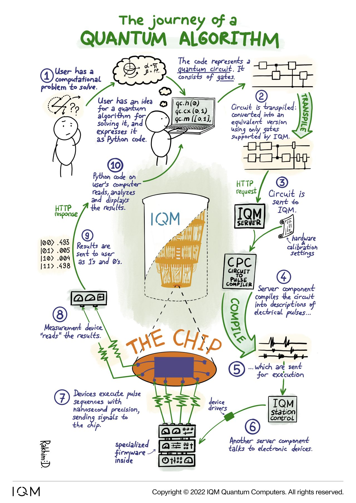
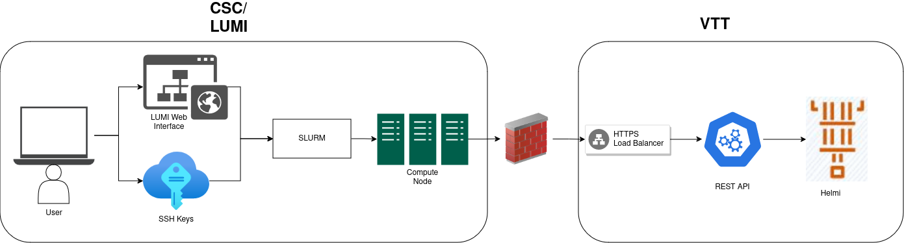

Workshop: Quantum Computing 101 Part I
In this workshop, an introduction to quantum computing is given with a practical approach! You will create a quantum program using qiskit and run your first quantum program on a real quantum computer - VTT Q5 Helmi hosted by VTT.
Access to Helmi is given through the Nordiquest platform via LUMI.
Objectives
Run your first quantum job on a real quantum computer!
Learn how to write quantum circuits and quantum algorithms
Learn where quantum computers are at right now, and how to get the most out of them today!
Setup
This notebook uses the following requirements.
qiskit-iqm==13.6
iqm-client==17.5
qiskit[visualization]
matplotlib
pylatexenc
Writing your first Quantum Program
A quantum program consists of a quantum circuit, which is an abstraction model, allowing us to create quantum algorithms by applying single qubit and two qubit quantum logic gates.
We construct, apply and run the quantum circuit on a backend using Python.
First quantum circuit
A basic template of a quantum program is given. It consists of three parts:
Creating and designing the quantum circuit
Running the quantum circuit
Analyzing the results
from qiskit import QuantumCircuit, Aer
from qiskit.visualization import plot_histogram
import numpy as np
qc = QuantumCircuit(1)
qc.x(0) # add a gate to the circuit
qc.measure_all() # add measurement at the end
# run
sim = Aer.get_backend('aer_simulator')
result = sim.run(qc).result() # run circuit, get results
qc.draw(output="mpl", initial_state=True)
# output statistics
counts = result.get_counts() # extract statistics from results
print(counts)
plot_histogram(counts)
A second example
In the first example we showed how to write and run a quantum circuit when the initial state was \(\ket{0}\), flipping the qubit 100% of the time into the \(\ket{1}\) state. What happens if we use some other initial state?
The state \(\ket{\psi_i}\) is a linear combination or superposition of basis qubits.
qc = QuantumCircuit(1)
init_state = [1. / np.sqrt(2), 1. / np.sqrt(2)] # define initial state
qc.initialize(init_state, 0) # initialize qubit 0 to init_state
qc.x(0) # add a gate to the circuit
qc.measure_all() # add measurement at the end
# run
sim = Aer.get_backend('aer_simulator')
result = sim.run(qc).result() # run circuit, get results
# output statistics
counts = result.get_counts() # extract statistics from results
print("\nCounts =", counts)
print()
plot_histogram(counts)
Now we see a distribution between the the states \(\ket{0}\) (represented by 0) and \(\ket{1}\) (represented by 1) were obtained in an almost equal number of cases. The histogram shows the respective probabilities, that is, the relative number of occurrence of each outcome, \(p_i = \frac{N_i}{N}\) where \(N_i\) is the number of outcomes \(i\) and \(N\) is the total number of outcomes.
In the perfect case the results should be exactly \((0.5, 0.5)\). The reason why this is not the case is because the simulator is trying to mimic a realistic quantum machine. An experimental distribution above generally differs from the ideal distribution \((0.5, 0.5)\). We would get closer to the ideal homogeneous distribution \((0.5, 0.5)\) when we increase the number shots. This is the same phenomenon as in any other random experiment like tossing a coin or rolling a die.
Running a quantum program on a real quantum computer
Now that we’ve seen the basics of writing a quantum program, let’s write one for running on a real quantum computer
VTTQ5 - Helmi
Helmi is a 5 qubit Quantum Computer that is co-developed by VTT and IQM. It uses superconducting transmon qubits in a star shaped topology. Helmi’s natives gates consist of the phased-rx and controlled-z gates. This architecture is called Adonis by IQM.
In this tutorial running on Helmi is demonstrated using the Qiskit framework by utilising the qiskit-on-iqm adapter. These notebooks are intended to be run on lumi.csc.fi which has access to run on Helmi. Additional documentation for running on Helmi can be found here.
Here is Helmi! It is located in Espoo, Finland.

Using Helmi with Qiskit
First we import qiskit-on-iqm which is needed to run on Helmi with qiskit. You can read the user guide here.
import matplotlib.pyplot as plt
from iqm.qiskit_iqm import IQMProvider, IQMFakeAdonis
from iqm.iqm_client import IQMClient
import networkx as nx
from qiskit import QuantumCircuit, QuantumRegister, execute, transpile
from qiskit.tools.monitor import job_monitor
from qiskit.visualization import plot_histogram
from qiskit_aer import Aer
from utils import get_calibration_data, plot_metrics
Then connection to the backend is simple! For this we point the IQMProvider at what is called the “cocos URL”. The cocos url to access Helmi is provided below.
Note:
Access to Helmi is only available through LUMI. If you are running this notebook on your laptop, please use the fake_backend instead of Helmi.
provider = IQMProvider("https://qc.vtt.fi/helmi/cocos")
backend_helmi = provider.get_backend()
We also create a backend to an ideal simulator. This acts as a comparison to the real device and will show results if our quantum device was perfect.
backend_sim = Aer.get_backend('aer_simulator')
Additionally, we can define a “noisy” simulator, which is a simulator that we can tune to behave like a real quantum computer.
fake_backend = IQMFakeAdonis()
Now that we have the backend connected to Helmi, let’s print out some information about Helmi!
print(f'Native operations: {backend_helmi.operation_names}')
print(f'Number of qubits: {backend_helmi.num_qubits}')
print(f'Coupling map: {backend_helmi.coupling_map}')
The topology can be visualised with networkx:
G = nx.Graph()
G.add_edges_from(backend_helmi.coupling_map)
node_labels = {node: f"QB{node + 1}" for node in G.nodes}
nx.draw(G, labels=node_labels, node_color='skyblue', node_size=500, font_size=10)
The topology can also be displayed as an image

Constructing and executing quantum circuits
Circuits are constructed and submitted to Helmi using the qiskit library. First we construct a Bell pair circuit between 2 qubits. The circuit is then executed on the backend using the execute function.
A Bell Pair creates an entanglement between the two qubits. Quantum entanglement is one of the reasons quantum computers are more powerful than classical computers at performing certain tasks. In quantum communication, entanglement is seen as resource that enables to carry out protocols that are impossible from classical point of view. In the next session we will see how entanglement allows to teleport a quantum state.
In this example I create the Bell pair
circuit = QuantumCircuit(2, name='Bell pair circuit')
circuit.h(0)
circuit.cx(0, 1)
circuit.measure_all()
circuit.draw(output='mpl')
Executing the circuit on Helmi
Now we have the connection to the backend and constructed the quantum circuit, next all that is needed is to submit the job!
To achieve this we use the execute function and display a histogram of the results. We then directly compare this to the simulator.
The execute function takes the quantum circuit, the backend and the shots as input. shots here means how many times to repeat the execution of the quantum circuit.
job = execute(circuit, backend_helmi, shots=100)
print(f"Job ID: {job.job_id()}.")
print("Tracking execution of job:")
job_monitor(job)
After submitting, the job is now running. The status of the job can be queried using job.status(). Using the job id, you can retrieve previous jobs.
status = job.status()
print(status)
#old_job = backend.retrieve_job(job_id)
Viewing the results
Once the quantum job has completed you can directly view the results.
result = job.result()
print(result.job_id) # The job id can be queried from the result
print(result.get_counts())
#print(result.get_memory())
plot_histogram(result.get_counts())
Task 1 - Run with the simulator
Now, run the same quantum circuit with the backend_sim. What are the two things you notice?
You can also try experimenting by changing the quantum circuit or increasing the number of shots.
Click to reveal
sim_job = execute(circuit, backend_sim, shots=100)
print(f"Job ID: {sim_job.job_id()}.")
print("Tracking execution of job:")
job_monitor(sim_job)
Additional metadata about the executed job can also be found. Note that this additional metadata only exists when running on Helmi.
exp_result = result._get_experiment(circuit)
print("Job ID: ", job.job_id()) # Retrieving the submitted job id
print(result.request.circuits) # Retrieving the circuit request sent
print("Calibration Set ID: ", exp_result.calibration_set_id) # Retrieving the current calibration set id.
print(result.request.qubit_mapping) # Retrieving the qubit mapping
print(result.request.shots) # Retrieving the number of requested shots.
print(exp_result.header)
From this metadata, we can see the calibration_set_id. You can think of the calibration set as a set of settings to operate the quantum computer at. This current calibration set is a snapshot of the most optimal settings for the quantum computer when generated.
The operational settings for the quantum computer will drift in time, therefore, a set of calibration experiments will need to be run, and the calibration set updated.
What did we just do?
 {kind=link}
{kind=link}
Improving the results 1
Now we have run our quantum circuit on a real quantum computer and seen how it differs from an ideal simulator. What can we do to improve the results from the real quantum computer?
Using calibration data
Using the execute function and passing the quantum circuit is a naive implementation. We don’t know which qubits we ran on and some qubits may be performing differently to others. To extract the best results from our algorithm we should look at the calibration data and pick the best qubits.
First we use some utility functions to get the calibration data and plot a particular metric.
from utils import get_calibration_data, plot_metrics
calibration_data = get_calibration_data(backend_helmi.client)
plot_metrics(
metric="fidelity_2qb_cliffords_averaged",
title="Two-qubit Gates Cliffords Averaged",
xlabel="Qubits",
ylabel="Fidelities",
data=calibration_data,
limits=[0.7, 1],
)
plot_metrics(
metric="single_shot_readout_fidelity",
title="Single Shot Readout Fidelities",
xlabel="Qubits",
ylabel="Success rate",
data=calibration_data,
limits=[0.85, 1],
)
plot_metrics(
metric="t1_time",
title="T1 times",
xlabel="Qubits",
ylabel="Time",
data=calibration_data,
)
plot_metrics(
metric="t2_time",
title="T2 times",
xlabel="Qubits",
ylabel="Time",
data=calibration_data,
)
plot_metrics(
metric="t2_echo_time",
title="T2 Echo times",
xlabel="Qubits",
ylabel="Time",
data=calibration_data,
)
plot_metrics(
metric="fidelity_1qb_gates_averaged",
title="Single-qubit Gate Fidelities",
xlabel="Qubits",
ylabel="Fidelities",
data=calibration_data,
limits=[0.95, 1],
)
Now let’s use transpilation to map our quantum circuit to a chosen set of qubits.
qreg = QuantumRegister(2, "QB")
circuit = QuantumCircuit(qreg, name="Bell pair circuit")
circuit.h(qreg[0])
circuit.cx(qreg[0], qreg[1])
circuit.measure_all()
# Qubit numbers start at 0 index whereas the qubit names start at 1 index.
qubit_mapping = {
qreg[0]: 4, # Map the first qubit to QB5
qreg[1]: 2, # Map the second qubit to QB3
}
transpiled_circuit = transpile(circuit, backend=backend_helmi, layout_method="sabre", optimization_level=3, initial_layout=qubit_mapping)
transpiled_circuit.draw("mpl")
job = execute(transpiled_circuit, backend_helmi, shots=100)
print(f"Job ID: {job.job_id()}.")
print("Tracking execution of job:")
job_monitor(job)
result = job.result()
print(result.request.qubit_mapping) # Retrieving the qubit mapping
plot_histogram(result.get_counts())
Using more shots
Additionally, we can just increase the number of repetitions or shots to get a more accurate distribution.
Summary
In this notebook we have demonstrated how to create and run your first quantum circuit using VTT’s Helmi quantum computer. We used Qiskit and qiskit-on-iqm to submit the jobs.
We also explored the limitations of using a real quantum computer compared to an ideal simulator, and how to improve the results.
Access to Helmi persists for the remainder of the event. Below are some exerises and tasks if you want to continue!
Tasks
Here are some tasks to demonstrate usage of Helmi and how to improve the results. Do you notice any differences compared to when you run with the simulator?
Task 1
In this task we create an entangled state on a real quantum computer!
Here is a demonstration of creating a Bell pair (Entanglement!) between qubits 1 and 3. Create an entanglement between the other qubit pairs according to the topology of Helmi! Which are the best qubit pairs today?
# create quantum circuit
qreg = QuantumRegister(2, "QB")
qc = QuantumCircuit(qreg, name='Bell pair circuit')
qc.h(0)
qc.cx(0, 1)
qc.measure_all()
qc.draw('mpl')
# Transpile the circuit
qubit_mapping = {
qreg[0]: 0, # Map the first qubit to QB1
qreg[1]: 2, # Map the second qubit to QB3
}
transpiled_circuit = transpile(qc, backend=backend_helmi, initial_layout=qubit_mapping)
transpiled_circuit.draw('mpl', idle_wires=False)
# Execute the circuit
job = execute(transpiled_circuit, backend_helmi, shots=100)
job_monitor(job)
counts = job.result().get_counts()
print(counts)
plot_histogram(counts)
Task 1 - Solution
def create_bell_pair_circuit(outer_qubit):
"""For a given outer qubit, create a bell pair between the outer qubit and QB3"""
qreg = QuantumRegister(2, "QB")
qc = QuantumCircuit(qreg, name='Bell pair circuit')
qc.h(0)
qc.cx(0, 1)
qc.measure_all()
# Create the qubit mapping
qubit_mapping = {
qreg[0]: outer_qubit,
qreg[1]: 2, # Map the second qubit to QB3
}
# Transpile the circuit with the qubit mapping
transpiled_circuit = transpile(qc, backend=backend_helmi, initial_layout=qubit_mapping)
return transpiled_circuit
outer_qubits = [0, 1, 3, 4] # Qubits 1, 2, 4, 5
bell_pair_circuits = [create_bell_pair_circuit(q) for q in outer_qubits]
# uncomment to draw the circuits
# for circuit in bell_pair_circuits:
# display(circuit.draw('mpl'))
jobs = [execute(qc, backend_helmi, shots=100) for qc in bell_pair_circuits]
for i, job in enumerate(jobs):
job_monitor(job)
counts = job.result().get_counts()
print(f"Counts for outer qubit {outer_qubits[i]}: {counts}")
def success_probability(counts):
total_shots = sum(counts.values())
success_count = counts.get('00', 0) + counts.get('11', 0)
return success_count / total_shots
outcome_order = ['00', '01', '10', '11']
success_probabilities = [success_probability(counts) for counts in [job.result().get_counts() for job in jobs]]
# Plot histograms for counts
plt.figure(figsize=(12, 6))
for i, counts in enumerate([job.result().get_counts() for job in jobs]):
plt.subplot(2, 2, i + 1)
sorted_counts = {outcome: counts.get(outcome, 0) for outcome in outcome_order}
plt.bar(sorted_counts.keys(), sorted_counts.values())
plt.title(f'Counts for outer qubit {outer_qubits[i]+1}')
plt.xlabel('Measurement Outcomes')
plt.ylabel('Counts')
plt.tight_layout()
# Plot histograms for success probabilities
plt.figure(figsize=(12, 6))
plt.bar(outer_qubits, success_probabilities)
plt.title('Success Probabilities for Each Outer Qubit')
plt.xlabel('Outer Qubit')
plt.ylabel('Success Probability')
plt.show()
Task 2 - Entangling more qubits: GHZ
We’ve now seen that we can create a Bell pair circuit where 2 qubits are entangled. What about entangling more than 2 qubits? The Greenberger-Horne-Zeilinger (GHZ) State does precisely this by creating an n-qubit entangled state. Running a GHZ experiment is useful for assessing the multi-qubit interactions in a quantum computer.
Here we demonstrate a 5 qubit GHZ circuit on Helmi.
Creating the GHZ circuit
# create quantum circuit
shots = 1000
qreg = QuantumRegister(5, "QB")
qc = QuantumCircuit(qreg, name='GHZ circuit')
qc.h(0)
qc.cx(0, 1) # apply CNOT, control=0, target=1
qc.cx(1, 2)
qc.cx(2, 3)
qc.cx(3, 4)
qc.measure_all()
qc.draw('mpl')
Let’s see what the simulator gives
from qiskit import Aer
simulator = Aer.get_backend('aer_simulator')
result = simulator.run(qc, shots=shots).result()
counts = result.get_counts() # extract statistics from results
print(counts)
plot_histogram(counts)
In this approach, the circuit is created in a ‘textbook’ fashion. Due to the topology of Helmi, after transpiling the circuit it becomes much longer because SWAP gates are needed.
transpiled_circuit = transpile(qc, backend=backend_helmi, layout_method='sabre', optimization_level=3)
transpiled_circuit.draw('mpl')
This can be shown by only displaying the routed circuit, without decomposition into native gates.
transpiled_circuit_simple = transpile(qc, coupling_map=backend_helmi.coupling_map, layout_method='sabre', optimization_level=3)
transpiled_circuit_simple.draw('mpl')
Let’s run this on Helmi!
job = execute(transpiled_circuit, backend_helmi, shots=1000)
job_monitor(job)
counts = job.result().get_counts()
plot_histogram(counts)
In this case we have an additional swap gates due to the central qubit (QB3) being the only available qubit to make 2 qubit gates.
We can reduce the number of swap gates needed and improve our GHZ 5 result by placing the Hadamard gate on the central qubit and CNOTs on all the neighbours.
# create quantum circuit
qreg = QuantumRegister(5, "QB")
qc = QuantumCircuit(qreg, name='GHZ circuit')
qc.h(2)
qc.cx(2, 0)
qc.cx(2, 1)
qc.cx(2, 3)
qc.cx(2, 4)
qc.measure_all()
qc.draw('mpl')
transpiled_circuit = transpile(qc, backend=backend_helmi, layout_method='sabre', optimization_level=3)
transpiled_circuit.draw('mpl')
Now we run the code on Helmi and look at the histogram.
job = execute(transpiled_circuit, backend_helmi, shots=1000)
job_monitor(job)
counts = job.result().get_counts()
plot_histogram(counts)
Advanced - Using Error Mitigation
Error mitigation is a class of techniques aimed at reducing the error from submitting to the current generation of noisy devices. This exercise demonstrates how to apply simple readout error mitigation to improve the results from our GHZ circuit.
This follows Qiskit’s tutorial: Readout Mitigation, however alternatives such as Mitiq can be used. Mitiq provides an open-source library to learn about and implement error mitigation.
For this brief example, readout error mitigation is applied using the LocalReadoutError mitigator from qiskit.experiments. Readout error mitigation refers to errors related to “reading out” of the quantum state into classical information which occurs during measurement.
With the LocalReadoutError, a \(2^n \times 2^n\) assignment matrix \(A\) is created, containing the probabilities to observe \(y\), given \(x\). That is to say that the individual elements of the matrix will contain the probabilities that a qubit prepared in state \(|0 \rangle\) or \(|1 \rangle\) and was measured in either state \(|0 \rangle\) or \(|1 \rangle\).
Here we demonstrate the LocalReadoutMitigator example, which assumes the readout errors of the qubits are uncorrelated. In this case \(n 2 \times 2\) mitigation matrices are generated, 1 for each qubit.
First we generate 2 circuits for all of Helmi’s qubits. The first circuit has no gates applied with the ideal outcome of all zeros: 00000, the second circuit applied an \(X\) gate to our circuit with the ideal outcome of all ones: 11111. After running the experiment we get the Mitigator which returns the mitigated qasi-probabilities.
from qiskit_experiments.library import LocalReadoutError
qubits = [0, 1, 2, 3, 4]
# The qiskit experiment class generates the "Calibration Circuits" based off the experiment and the qubits input.
exp = LocalReadoutError(qubits)
for c in exp.circuits():
print(c)
The experiment can simple be run. Qiskit’s experiments library takes take of the circuit transpilation and execution in addition to analysis. In this case the above circuits are run and then analysed.
provider = IQMProvider("https://qc.vtt.fi/helmi/cocos")
backend = provider.get_backend()
backend = fake_backend
# from qiskit import Aer
# backend = Aer.get_backend('aer_simulator')
exp.analysis.set_options(plot=True)
result = exp.run(backend)
mitigator = result.analysis_results(0).value
result.figure(0)
Here \(A\) is the assignment matrix, with \(I\) being the identity matrix. The individual components of the assignment matrix represent the probabilities to, for example prepare a \(|0 \rangle\) state and get a \(|1 \rangle\) state or \(|1\rangle\) state and get a \(|0\rangle\) state. This is compared against the identity matrix because in the ideal case we would expect \(P(X|X) = 1\) and \(P(X|Y) = 0\) (\(P(X|X)\) means the probability of \(X\) given \(X\)) The plot shows the absolute value of these two matrices.
The automatic scale given by Qiskit experiments can be slightly misleading, as demonstrated when you run this with the simulator.
The assignment matrix can be printed.
mitigator.assignment_matrix()
print(len(mitigator.assignment_matrix()))
If, for example we used the simulator here the assignment matrix would look like the following:
array([[1., 0., 0., ..., 0., 0., 0.],
[0., 1., 0., ..., 0., 0., 0.],
[0., 0., 1., ..., 0., 0., 0.],
...,
[0., 0., 0., ..., 1., 0., 0.],
[0., 0., 0., ..., 0., 1., 0.],
[0., 0., 0., ..., 0., 0., 1.]])
With the simulator the \(n\) mitigation matrices will look like:
[1. 0.]
[0. 1.]
When using the Qiskit experiment library the analysis is hidden from the user.
Here is the code snippet from Qiskit experiments LocalReadoutErrorAnalysis if you wish to see what it’s doing under the hood.
for m in mitigator._mitigation_mats:
print(m)
print()
print(len(mitigator._mitigation_mats))
Then a circuit can be run on Helmi and our error mitigation applied! In this case we apply the readout error mitigation to the GHZ circuit.
shots = 10000
counts = backend.run(transpiled_circuit, shots=shots).result().get_counts()
unmitigated_probs = {label: count / shots for label, count in counts.items()}
mitigated_quasi_probs = mitigator.quasi_probabilities(counts)
mitigated_probs = (mitigated_quasi_probs.nearest_probability_distribution().binary_probabilities())
legend = ['Mitigated Probabilities', 'Unmitigated Probabilities']
plot_histogram([mitigated_probs, unmitigated_probs], legend=legend, sort="value_desc", bar_labels=False)
We can quickly see how the total success probability has increased by counting the number of all 0’s and all 1’s states.
print((unmitigated_probs['00000']+unmitigated_probs['11111']))
print((mitigated_probs['00000']+mitigated_probs['11111']))
This is just 1 example of error mitigation for mitigating the “Local” (when you assume the readout erros for each qubit are independent) readout error. You could also apply what the Correlated readout error mitigation as described in Qiskit’s tutorial or other forms of error mitigation which are described in Mitiq’s documentation.
Additional Information
This notebook was written for the NeIC Conference 2024, held in Tallinn. It was built using
iqm-client==15.3
qiskit-iqm==11.10
qiskit==0.45.2
qiskit-aer==0.13.2
qiskit-experiments==0.6.0
Author: Jake Muff